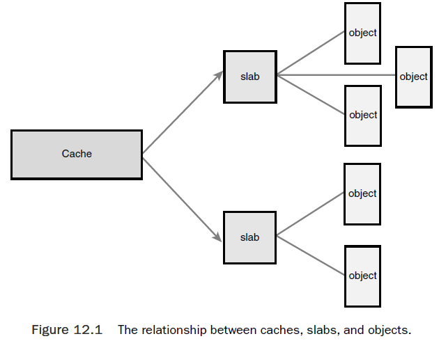
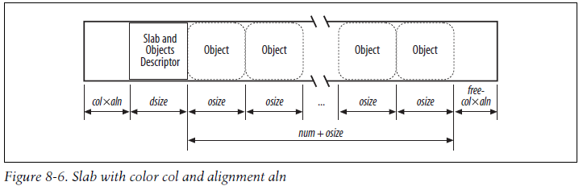
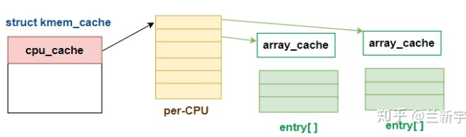
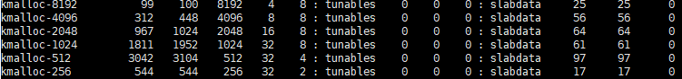
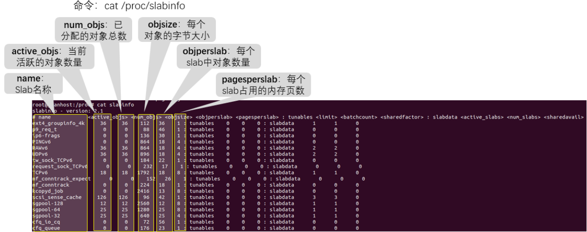
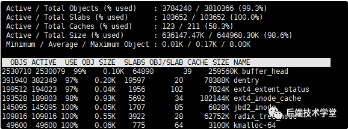
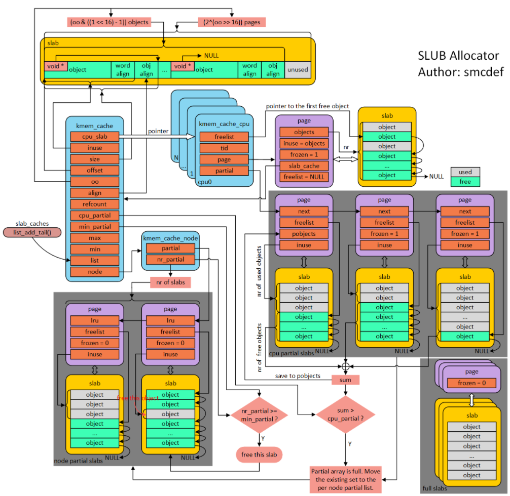

use a memory allocator with thread-local caches, such as the popular malloc() replacement library TCMalloc.
Problems with such allocators:
Use block allocator to avoid memory fragmentation.
Advantage:
Linux kernel provides the slab layer (also called the slab allocator).The slab layer acts as a generic per-process data structure-caching layer.
A bit of history
slab 算法共有三种：SLAB、SLUB、SLOB。SLAB 最早出现，而 SLOB 和 SLUB 是后面出现的，但是继承了 SLAB 的接口定义，所以现在都倾向于对该类型内存算法称为 slab。SLAB 是最早出现的分配算法，内存块管理采用的是红黑树；而 SLOB 是针对嵌入式场景而优化的；SLUB 则是现在主流算法，是针对 SLAB 的改良。三种算法的接口统一，也就意味着不能共存，内核编译时可以通过配置选项来控制选择何种算法。
The slab allocator has three principle aims:
The slab layer divides different objects into groups called caches, each of which stores a different type of object, ie. one cache per object type.
task_struct structures), whereas another cache is for inode objects.The caches are then divided into slabs. Each slab is composed of one or more physically contiguous pages (typically, one page).
Each slab contains some number of objects, which are the data structures being cached. Each slab is in one of three states: full (all objects allcoated), partial, or empty (all objects free). A new request is first served in partial slab, if available, otherwise, from an empty slab. If no empty slab, one is created.

Each cache is represented by a kmem_cache structure.This structure contains three
lists: slabs_full, slabs_partial, and slabs_empty, they are stored inside a kmem_list3
structure, which is defined in <mm/slab.c>.
A slab descriptor, struct slab, represents each slab:
struct slab {
struct list_head list; /* full, partial, or empty list */
unsigned long colouroff; /* offset for the slab coloring */
void *s_mem; /* first object in the slab */
unsigned int inuse; /* allocated objects in the slab */
kmem_bufctl_t free; /* first free object, if any */
};
Objects that have the same offset within different slabs will, with a relatively high probability, end up mapped in the same cache line.
Slab coloring is a scheme which attempts to have objects in different slabs use different lines in the cache. It uses the free unused bytes to color the slab. If a slab is colored with color col, the offset of the first object (with respect to the slab initial address) is equal to col × aln + dsize bytes. Coloring essentially leads to moving some of the free area of the slab from the end to the beginning.

To improved hardware cache utilization, Linux tries to keep objects in the same CPU cache with a cpucache object cache.
When allocating or freeing objects, they are placed in the cpucache. When there are no objects free, a batch of objects is placed into the pool. When the pool gets too large, half of them are removed and placed in the global cache. The second major benefit of this method is that spinlocks do not have to be held when accessing the CPU pool.
Inside each kmem_cache, there is a per-cpu cache if it is SMP.
struct kmem_cache_s {
...
#ifdef CONFIG_SMP
cpucache_t *cpudata[NR_CPUS];
#endif
...
}
A helper macro cc_data() is provided to give the cpucache for a given cache and processor. It is defined as
#define cc_data(cachep) \
((cachep)->cpudata[smp_processor_id()])
Pointers to objects on the cpucache are placed immediately after the cpucache_t struct.

There are two types of slab allocators:
kmem_cache_create(name, ...)./proc/slabinfo, they show us as size-N cachekmalloc 是基于slab 分配器的 ，同样可以用cat /proc/slabinfo 命令，查看 kmalloc 相关 slab 对象信息，下面的 kmalloc-8、kmalloc-16 等等就是基于slab分配的 kmalloc 高速缓存。

A new cache is created via
struct kmem_cache * kmem_cache_create(const char *name,
size_t size, /*size of the each object in the cache*/
size_t align,
unsigned long flags,
void (*ctor)(void *));
flags parameter:
The final parameter, ctor, is a constructor for the cache.The constructor is called
whenever new pages are added to the cache. In practice, caches in the Linux kernel do
not often utilize a constructor. You can pass NULL for this parameter.
After a cache is created, an object is obtained from the cache via
// If no free objects are in any slabs in the cache, the slab layer will obtain new pages via
// kmem_getpages(), the value of `flags` is passed to __get_free_pages().
void * kmem_cache_alloc(struct kmem_cache *cachep, gfp_t flags);
// To later free an object and return it to the slab
void kmem_cache_free(struct kmem_cache *cachep, void *objp);
Slab layer for the task_struct structure, defined in kernel/fork.c.
// a global variable
struct kmem_cache *task_struct_cachep;
// During kernel initialization, in fork_init(), the cache is created
task_struct_cachep = kmem_cache_create(“task_struct”,
sizeof(struct task_struct),
ARCH_MIN_TASKALIGN,
SLAB_PANIC | SLAB_NOTRACK,
NULL);
// Each time a process calls fork(), a new process descriptor must be created,
// This is done in dup_task_struct(), which is called from do_fork():
struct task_struct *tsk;
tsk = kmem_cache_alloc(task_struct_cachep, GFP_KERNEL);
if (!tsk)
eturn NULL;
// After a task dies, if it has no children waiting on it, its process descriptor is freed
// and returned to the task_struct_cachep slab cache.This is done in free_task_struct()
// `tsk` is the exiting task:
kmem_cache_free(task_struct_cachep, tsk);
cat /proc/slabinfo
slabtop 实时显示内核slab 内存缓存信息。



per cpu freelist
针对每一个cpu都会分配一个struct kmem_cache_cpu的结构体。可以称作是本地缓存池。当内存申请的时候，优先从本地cpu缓存池申请。
kmem_cache_cpu中page成员指向正在使用的slab的struct page。freelist成员指向第一个可用内存obj首地址。在分配初期，要从伙伴系统分配一定页数的内存。内核会为每一个page frame创建一个struct page的page frame descriptor。
struct page结构体中inuse代表已经使用的obj数量。被置成obj的总数，主要用于full slab，就像图的右下角，就像无人看管的孩子，没有任何链表来管理。per cpu partial
当图中右下角full slab释放obj的时候，首先就会将slab挂入per cpu partial链表管理。通过struct page中next成员形成单链表。
per cpu partial链表指向的第一个page中会存放一些特殊的数据。
pobjects存储着per cpu partial链表中所有slab可供分配obj的总数，如图所示。per node partial
per node partia链表类似per cpu partial，区别是node中的slab是所有cpu共享的，而per cpu是每个cpu独占的。假如现在的slab布局如上图所示。假如现在如红色箭头指向的obj将会释放，那么就是一个empty slab，此时判断kmem_cache_node->nr_partial是否大于kmem_cache->min_partial，如果大于则会释放该slab的内存。
slub分配内存
首先从cpu本地缓存池分配，如果kmem_cache_cpu->freelist不存在，就会转向per cpu partial分配 （此时这个partial slab会升级成为active slab，kmem_cache_cpu->page和kmem_cache_cpu->freelist会更新而指向它），如果per cpu partial也没有可用对象，继续查看per node partial，如果很不幸也不没有可用对象的话，就只能从伙伴系统分配一个slab了，并挂入per cpu freelist。
slub释放内存
pobjects field in first struct page in per cpu partial list）超过kmem_cache->cpu_partial成员的话，就会将此时per cpu partial链表中所有的slab移送到kmem_cache_node的partial链表，然后再将刚刚释放obj的slab插入到per cpu partial链表。如果不大于，则更新pobjects和pages成员，并将slab插入到per cpu partial链表。kmem_cache_node的nr_partial大于kmem_cache的min_partial的情况下，则会释放该slab的内存。其他情况就直接释放即可。